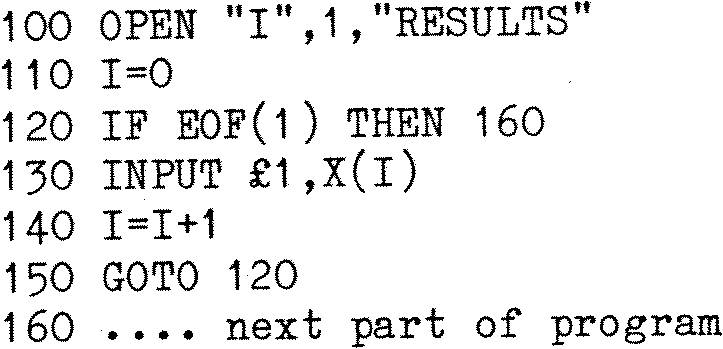

80-Bus News |
May–June 1983 · Volume 2 · Issue 3 |
| Page 18 of 59 |
|---|
LINE INPUT may be used with disk files and has the same format as INPUT; it is used for reading in an entire file line without using quotes, commas etc. and is particularly useful if a SAVEd (ASCII) BASIC program is to be read as data by another program.
EOF (end of file) detection. This function is used to detect when there is no more data in the input file; it takes the: form: X=EOF(<file number>). When there is no more data, EOF is TRUE (-1), otherwise it is FALSE (0); an INPUT PAST END error will occur if an attempt is made to read past the end of a data file. For example:
So far, all the examples of file handling which have been discussed here have concerned sequential files, but there are a number of applications where the time taken to access a sequential file will be excessively long since in order to pick out a data item near the end, all the previous data records have to be read! This is particularly awkward where, for example, a selective search of a mailing list or inventory is required. The rate of data transfer in random I/O files is also faster and the process altogether more efficient than is the case with sequential files, but the technique is rather more complex, and you are advised to try the sequential method to gain experience.
OPENing random files is done in exactly the same way as sequential files, except that the mode is set to “R”; CLOSEing is done in an identical fashion.
This is accomplished by using the PUT and GET commands. Each random file has a buffer up to 128 byte long associated with it and data is moved into or out of this buffer from or to the data file. PUT takes data and writes it into the buffer and GET reads data from the data file into the buffer; the format for these commands is:
PUT <file number>,[<record number>] GET <file number>,[<record number>]
If the <record number> is omitted from either statement, then that record number is incremented by 1 from the previous GET or PUT, and the appropriate record is read or written into the random buffer. The highest record number which is allowed is 2046 and an initial GET or PUT without a record number will read or write the first record. If an attempt is made to GET a record which has not been PUT, that record is returned as a series of zeroes and no error message is displayed. Further information on random I/O files should be obtained from an MBASIC manual.
[Ed. – Mine is capable of 32767 records.]
Three possible versions of this command exist:
DELETE <line number> deletes that line only;
DELETE-<line number> deletes every line of the current program up to and
including the current line;
DELETE <line number>-<line number> deletes inclusive line numbers from the first
to the last.
| Page 18 of 59 |
|---|